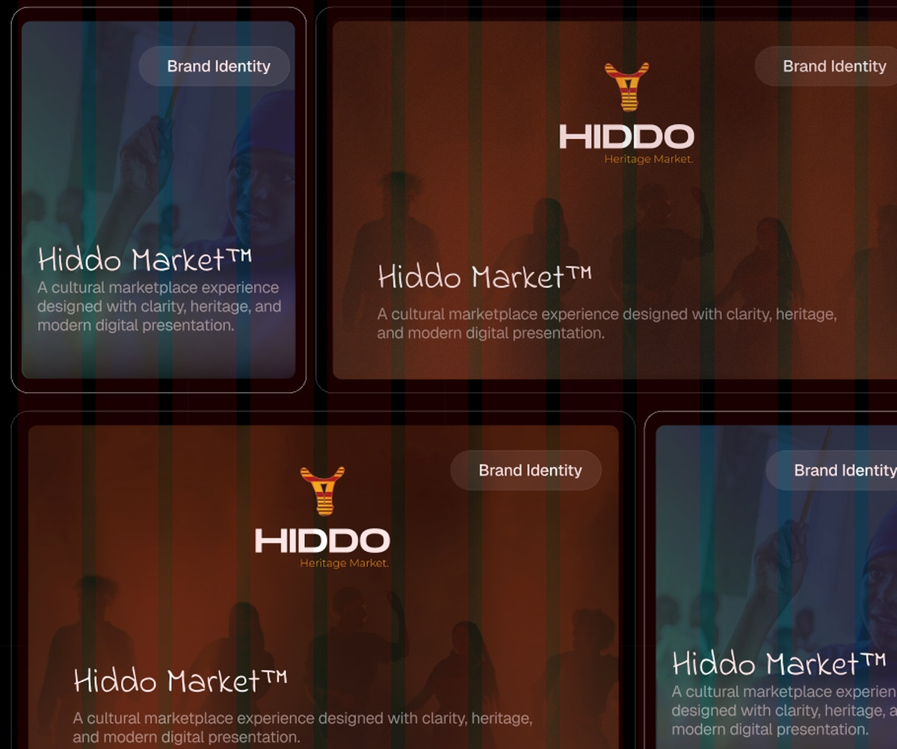
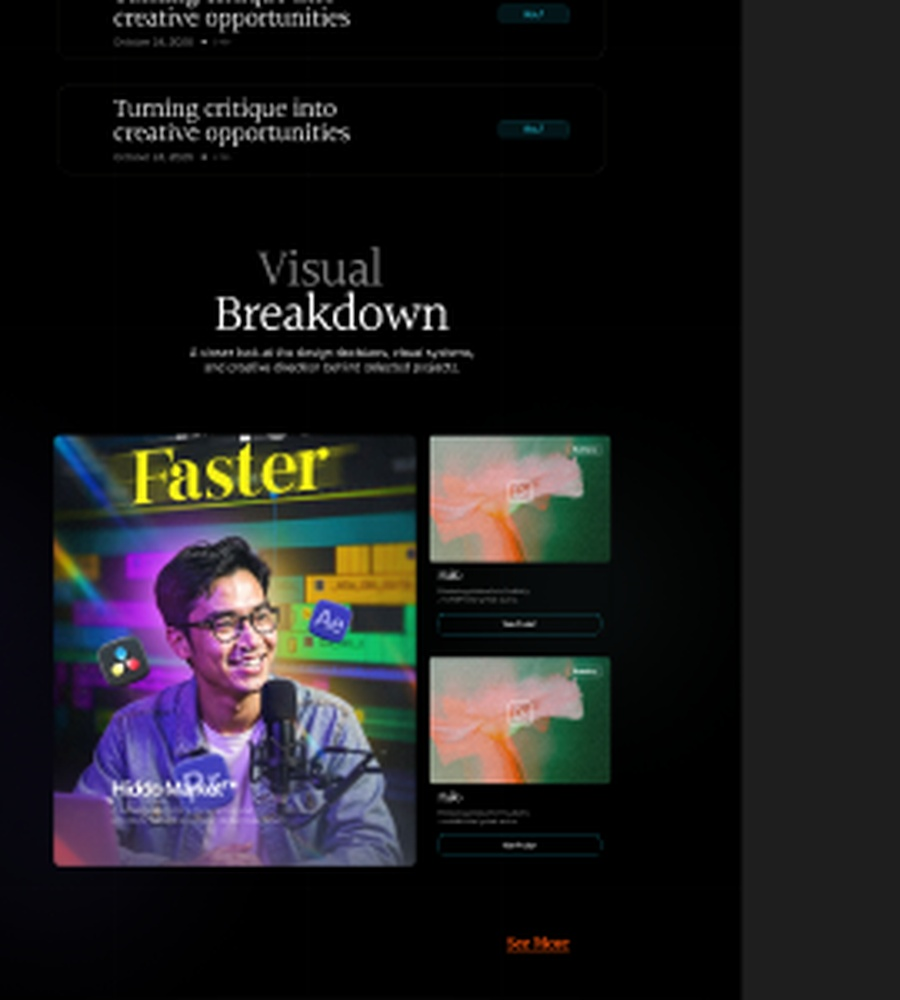

Hiddo Market™
A cultural marketplace experience designed with clarity, heritage, and modern digital presentation.
Project Overview
Hiddo Market is a digital marketplace concept inspired by Somali heritage and culture. The goal was to create a modern platform that preserves cultural identity while providing a simple and accessible shopping experience.
The Challenge
Creating a digital experience that balances cultural authenticity with modern usability, while making the platform simple, clear, and enjoyable for users.
Our Process
01Discover
02Define
03Ideate
04Design
Visual Identity
The visual system combines traditional inspiration with modern design principles to create a recognizable and meaningful brand presence.


Final Outcome
A complete digital brand and marketplace experience that combines cultural storytelling with modern product design.